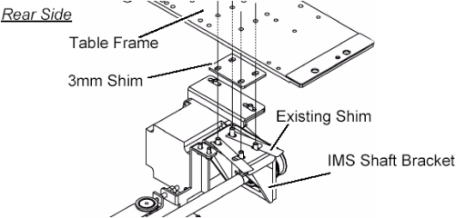

NOTE:
The holes in the 3mm shim are not evenly centered. The portion with more space between holes and edge of shim goes to the back of the Table.
Illustration 11:
3 mm Shims Installation (Rear Side)
